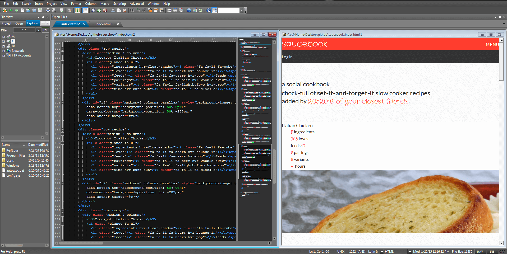
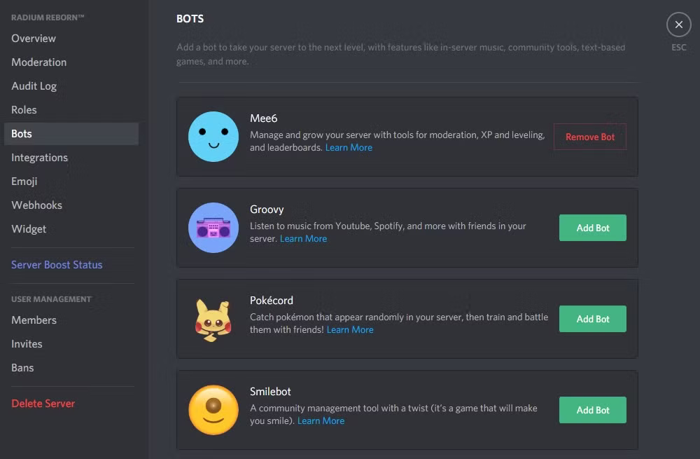
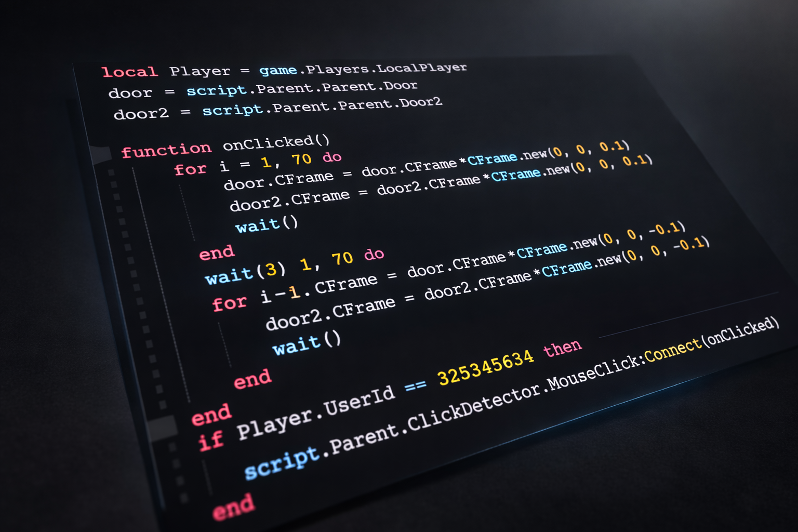

DOMINATE THE DIGITAL
Otomasi bisnis Anda dengan kode profesional.
Otomasi bisnis Anda dengan kode profesional.

Nikmati layanan pembuatan website dengan performa tinggi untuk bisnis, portofolio, dan landing page kustom.

Otomasi server komunitas Anda dengan bot fitur lengkap, mulai dari sistem moderasi hingga integrasi API.

Script kustom untuk pengembangan game Anda dengan optimasi kode yang bersih dan anti-delay.